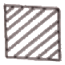
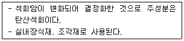
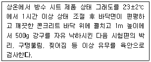
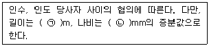
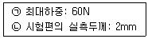
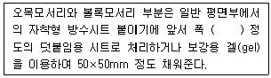
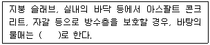
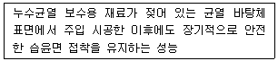
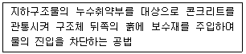
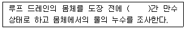

방수산업기사 (2017-08-26 기출문제)
1과목: 방수일반
1. 콘크리트에 일정한 하중이 계속 작용하면 하중의 증가없이도 시간과 더불어 변형이 증가하는 현상은?(정답지를 찾지못하여 정답이 정확하지 않습니다. 정확한 정답을 아시는 분께서는 오류 신고를 통하여 정답 입력 부탁 드립니다.)
- 백화 현상
- 중성화 현상
- 크리프 현상
- 블리딩 현상
(정답률: 알수없음)

2. 지붕의 경사가 1/6 이하인 지붕을 무엇이라 하는가?(정답지를 찾지못하여 정답이 정확하지 않습니다. 정확한 정답을 아시는 분께서는 오류 신고를 통하여 정답 입력 부탁 드립니다.)
- 평지붕
- 완경사 지붕
- 급경사 지붕
- 일반 경사 지붕
(정답률: 알수없음)
3. 목재 건조의 목적으로 옳지 않은 것은?(정답지를 찾지못하여 정답이 정확하지 않습니다. 정확한 정답을 아시는 분께서는 오류 신고를 통하여 정답 입력 부탁 드립니다.)
- 중량 경감
- 강도 증진
- 균류 발생 방지
- 섬유포화점 저하
(정답률: 알수없음)
4. 근로자의 추락을 방지하기 위한 시설에 속하지 않는 것은?(정답지를 찾지못하여 정답이 정확하지 않습니다. 정확한 정답을 아시는 분께서는 오류 신고를 통하여 정답 입력 부탁 드립니다.)
- 울타리
- 안전난간
- 안전방망
- 해지장치
(정답률: 알수없음)
5. 하인리히의 재해예방 4원칙에 속하지 않는 것은?
- 예방 가능의 원칙
- 대책 선정의 원칙
- 원인 연계의 원칙
- 손실 보존의 원칙
(정답률: 알수없음)
6. 시멘트의 발열량을 저감시킬 목적으로 제조한 시멘트로 매스콘크리트용으로 사용되는 것은?(정답지를 찾지못하여 정답이 정확하지 않습니다. 정확한 정답을 아시는 분께서는 오류 신고를 통하여 정답 입력 부탁 드립니다.)
- 알루미나시멘트
- 백색포틀랜드시멘트
- 조강포틀랜드시멘트
- 중용열포틀랜드시멘트
(정답률: 알수없음)
7. 철근콘크리트구조에 관한 설명으로 옳지 않은 것은?(정답지를 찾지못하여 정답이 정확하지 않습니다. 정확한 정답을 아시는 분께서는 오류 신고를 통하여 정답 입력 부탁 드립니다.)
- 자체 중량이 크다.
- 건식 구조로 공기가 짧다.
- 형태를 자유롭게 구성할 수 있다.
- 균열 발생이 쉽고 국부적으로 파손되기 쉽다.
(정답률: 알수없음)
8. 소음·진동관리법령에 따른 소음발생건설기 종류에 속하지 않는 것은?(정답지를 찾지못하여 정답이 정확하지 않습니다. 정확한 정답을 아시는 분께서는 오류 신고를 통하여 정답 입력 부탁 드립니다.)
- 천공기
- 항타 및 항발기
- 실내용 발전기
- 콘크리트 절단기
(정답률: 100%)
9. 재해발생 원인 중 인적 요인에 속하지 않는 것은?(정답지를 찾지못하여 정답이 정확하지 않습니다. 정확한 정답을 아시는 분께서는 오류 신고를 통하여 정답 입력 부탁 드립니다.)
- 착오
- 피로
- 무의식 행동
- 안전교육 부족
(정답률: 알수없음)
10. 건축제도의 치수에 관한 설명으로 옳지 않은 것은?(정답지를 찾지못하여 정답이 정확하지 않습니다. 정확한 정답을 아시는 분께서는 오류 신고를 통하여 정답 입력 부탁 드립니다.)
- 치수의 단위는 센티미터(cm)를 원칙으로 한다.
- 치수 기입은 치수선 중앙 윗부분에 기입하는 것이 원칙이다.
- 치수는 특별히 명시하지 않는 한, 마무리 치수로 표시한다.
- 치수 기입은 치수선에 평행하게 도면의 왼쪽에서 오른쪽으로, 아래로부터 위로 읽을 수 있도록 기입한다.
(정답률: 알수없음)
11. 다음 중 중력배수 공법에 속하는 것은?(정답지를 찾지못하여 정답이 정확하지 않습니다. 정확한 정답을 아시는 분께서는 오류 신고를 통하여 정답 입력 부탁 드립니다.)
- 집수정 공법
- 전기침투 공법
- 웰 포인트 공법
- 지하연속벽 공법
(정답률: 알수없음)
12. 홈통에 관한 설명으로 옳지 않은 것은?(정답지를 찾지못하여 정답이 정확하지 않습니다. 정확한 정답을 아시는 분께서는 오류 신고를 통하여 정답 입력 부탁 드립니다.)
- 처마홈통과 선홈통을 연결하는 경사홈통을 깔대기홈통이라 한다.
- 처마 끝에 수평으로 설치하여 빗물을 받는 홈통을 처마홈통이라 한다.
- 처마홈통에서 내려오는 빗물을 지상으로 유도하는 수직 홈통을 선홈통이라 한다.
- 두 개의 지붕면이 만나는 자리 또는 지붕면과 벽면이 만나는 수평 지붕골에 쓰이는 홈통을 장식홈통이라 한다.
(정답률: 알수없음)
13. 중간에 기둥을 두지 않고 구조물의 주요 부분을 케이블 등에 매달아서 인장력으로 저항하는 구조는?(정답지를 찾지못하여 정답이 정확하지 않습니다. 정확한 정답을 아시는 분께서는 오류 신고를 통하여 정답 입력 부탁 드립니다.)
- 쉘 구조
- 절판 구조
- 아치 구조
- 현수 구조
(정답률: 알수없음)
14. 건축도면에서 다음과 같은 단면용 재료 표시 기호가 의미하는 것은?(정답지를 찾지못하여 정답이 정확하지 않습니다. 정확한 정답을 아시는 분께서는 오류 신고를 통하여 정답 입력 부탁 드립니다.)

- 석재
- 콘크리트
- 목재 구조재
- 목재 치장재
(정답률: 알수없음)
15. 다음 설명에 알맞은 석재의 종류는?(정답지를 찾지못하여 정답이 정확하지 않습니다. 정확한 정답을 아시는 분께서는 오류 신고를 통하여 정답 입력 부탁 드립니다.)

- 대리석
- 화강암
- 감람석
- 응회암
(정답률: 알수없음)
16. 연평균 근로자수가 1000명인 사업장에서 한 해 동안 15명의 사상자가 발생하였을 경우 연천인율은? (단, 근로자는 1일 8시간, 연간 250일을 근무하였다.)(정답지를 찾지못하여 정답이 정확하지 않습니다. 정확한 정답을 아시는 분께서는 오류 신고를 통하여 정답 입력 부탁 드립니다.)
- 10
- 15
- 20
- 25
(정답률: 알수없음)
17. 다음 중 일체식 구조에 속하는 것은?(정답지를 찾지못하여 정답이 정확하지 않습니다. 정확한 정답을 아시는 분께서는 오류 신고를 통하여 정답 입력 부탁 드립니다.)
- 나무구조
- 벽돌구조
- 블록구조
- 철근콘크리트구조
(정답률: 알수없음)
18. 건축 도면 중 건물 내부의 입면을 정면에서 바라보고 그린 내부 입면도는?(정답지를 찾지못하여 정답이 정확하지 않습니다. 정확한 정답을 아시는 분께서는 오류 신고를 통하여 정답 입력 부탁 드립니다.)
- 구상도
- 조직도
- 전개도
- 동선도
(정답률: 알수없음)
19. 철강 표면 또는 금속 소지의 녹 방지를 목적으로 사용되는 방청도료에 속하지 않는 것은?
- 에칭 프라이머
- 래커 프라이머
- 광명단 조합페인트
- 아연 분말 프라이머
(정답률: 알수없음)
20. 건축제도에서 중심선, 절단선, 기준선 등의 표시에 사용되는 선의 종류는?(정답지를 찾지못하여 정답이 정확하지 않습니다. 정확한 정답을 아시는 분께서는 오류 신고를 통하여 정답 입력 부탁 드립니다.)
- 파선
- 1점 쇄선
- 가는 실선
- 굵은 실선
(정답률: 알수없음)
2과목: 방수재료
21. 합성고분자계 방수시트 중 가황고무계 시트의 주원료에 속하지 않는 것은?(정답지를 찾지못하여 정답이 정확하지 않습니다. 정확한 정답을 아시는 분께서는 오류 신고를 통하여 정답 입력 부탁 드립니다.)
- 부틸고무
- 염화비닐 수지
- 에틸렌프로필렌 고무
- 클로로슬폰화 폴리에틸렌
(정답률: 알수없음)
22. 건설용 도막 방수재(수평부용)에 요구되는 성능에 속하지 않는 것은?
- 부착 성능
- 인장 성능
- 내피로 성능
- 흘러내림 저항 성능
(정답률: 알수없음)
23. 방수재료의 성능시험 중 수압의 작용에 의한 물의 침투 및 관통 저항성 평가를 목적으로 하는 것은?(정답지를 찾지못하여 정답이 정확하지 않습니다. 정확한 정답을 아시는 분께서는 오류 신고를 통하여 정답 입력 부탁 드립니다.)
- 인열 시험
- 내투수성 시험
- 내피로성능 시험
- 굴곡저항성능 시험
(정답률: 알수없음)
24. 다음 설명에 알맞은 수 팽창성 벤토나이트 방수 시트의 품질 시험 방법은?

- 정수압 시험
- 낙구 충격 시험
- 인열 강도 시험
- 인장 강도 시험
(정답률: 알수없음)
25. 방수공사용 1종 아스팔트의 연화점은 최소 얼마 이상인가?
- 65℃
- 75℃
- 85℃
- 95℃
(정답률: 알수없음)
26. 방수재료를 정형재료와 부정형재료로 구분할 경우, 다음 중 정형재료에 속하지 않는 것은?(정답지를 찾지못하여 정답이 정확하지 않습니다. 정확한 정답을 아시는 분께서는 오류 신고를 통하여 정답 입력 부탁 드립니다.)
- 분말형
- 시트형
- 패널형
- 매트형
(정답률: 알수없음)
27. 개량 아스팔트 방수시트의 종류를 1류와 2류로 구분하는 기준은?
- 온도 특성에 의한 구분
- 재료 구성에 의한 구분
- 노출 여부에 따른 구분
- 접합면 처리에 따른 구분
(정답률: 알수없음)
28. 다음 중 지붕방수에 사용되는 방수재료의 요구 성능과 가장 거리가 먼 것은?(정답지를 찾지못하여 정답이 정확하지 않습니다. 정확한 정답을 아시는 분께서는 오류 신고를 통하여 정답 입력 부탁 드립니다.)
- 내후성
- 내충격성
- 습윤면 부착성
- 바탕재에 대한 거동 추종성
(정답률: 알수없음)
29. 인열 시험의 목적으로 옳은 것은?(정답지를 찾지못하여 정답이 정확하지 않습니다. 정확한 정답을 아시는 분께서는 오류 신고를 통하여 정답 입력 부탁 드립니다.)
- 바탕면에 부착된 방수재의 박리저항성 확인
- 방수재를 찢으려는 힘에 대한 저항성능 확인
- 콘크리트 구조체의 균열 발생에 따른 방수재 파단 유무 확인
- 외부로부터 발생 될 수 있는 충격에 대한 방수층의 손상유무 평가
(정답률: 알수없음)
30. 다음은 자착식형 고무화 아스팔트 방수 시트(자착식형 고무화 아스팔트층+보호 필름 또는 시트) 제품의 나비 및 길이에 관한 표준(KS F 4934)내용이다. ( )안에 알맞은 숫자는?(정답지를 찾지못하여 정답이 정확하지 않습니다. 정확한 정답을 아시는 분께서는 오류 신고를 통하여 정답 입력 부탁 드립니다.)

- ㉠ 1, ㉡ 10
- ㉠ 1, ㉡ 100
- ㉠ 5, ㉡ 10
- ㉠ 5, ㉡ 100
(정답률: 알수없음)
31. 합성고분자계 균질시트의 인열 성능 시험 결과가 다음과 같을 때 인열강도는?(정답지를 찾지못하여 정답이 정확하지 않습니다. 정확한 정답을 아시는 분께서는 오류 신고를 통하여 정답 입력 부탁 드립니다.)

- 15N/mm
- 30N/mm
- 60N/mm
- 120N/mm
(정답률: 알수없음)
32. 시멘트 혼입 폴리머계 방수재의 성능 시험 항목에 속하지 않는 것은?(정답지를 찾지못하여 정답이 정확하지 않습니다. 정확한 정답을 아시는 분께서는 오류 신고를 통하여 정답 입력 부탁 드립니다.)
- 내균열성
- 부착 강도
- 압축 강도
- 습기 투과성
(정답률: 알수없음)
33. 시멘트 액체방수공사에 사용되는 시멘트의 종류는?
- 1종 보통 포틀랜드 시멘트
- 2종 중용열 포틀랜드 시멘트
- 3종 조강 포틀랜드 시멘트
- 4종 저열 포틀랜드 시멘트
(정답률: 알수없음)
34. 폴리우레아수지 도막 방수재의 요구 성능 중 진동 또는 거동의 영향이 크게 작용하는 구조물에서 사용하고자 할 때 특히 요구되는 성능은?(정답지를 찾지못하여 정답이 정확하지 않습니다. 정확한 정답을 아시는 분께서는 오류 신고를 통하여 정답 입력 부탁 드립니다.)
- 부착 성능
- 내피로 성능
- 도포 작업성능
- 온도 의존 성능
(정답률: 알수없음)
35. 한국산업표준(KS)에 따른 건설용 도막 방수재 중 요구되는 최소 인장강도가 가장 큰 것은?(정답지를 찾지못하여 정답이 정확하지 않습니다. 정확한 정답을 아시는 분께서는 오류 신고를 통하여 정답 입력 부탁 드립니다.)
- 아크릴 고무계
- 우레탄 고무계
- 실리콘 고무계
- 고무 아스팔트계
(정답률: 알수없음)
36. 규산질계 분말형 도포방수재의 품질시험 항목에 속하지 않는 것은?
- 흡수량
- 인열강도
- 압축강도
- 내잔갈림성
(정답률: 알수없음)
37. 방수재료에 요구되는 성능으로 옳지 않은 것은?(정답지를 찾지못하여 정답이 정확하지 않습니다. 정확한 정답을 아시는 분께서는 오류 신고를 통하여 정답 입력 부탁 드립니다.)
- 수밀성
- 흡습성
- 내마모성
- 내풍압성
(정답률: 알수없음)
38. 개량 아스팔트 방수 시트의 겉모양에 대한 품질 기준으로 옳지 않은 것은?(정답지를 찾지못하여 정답이 정확하지 않습니다. 정확한 정답을 아시는 분께서는 오류 신고를 통하여 정답 입력 부탁 드립니다.)
- 끝부분의 절단선이 길이 방향에 대해서 거의 직각으로 되어 있어야 한다.
- 1롤의 길이가 8.0m 미만인 경우, 1롤 도중에서 절단되어 있지 않아야 한다.
- 1롤의 길이가 8.0m 이상인 경우, 1롤 도중에서 2곳 이상 절단되어 있지 않아야 한다.
- 1롤의 길이가 8.0m 이상이고 1롤 도중에서 1곳이 절단되어 있는 경우, 한편의 길이는 1.8m 이상이어야 한다.
(정답률: 알수없음)
39. 시트방수재와 도막방수재의 적층 복합방수공법(M-CoMi) 중 전면접착의 각 층별 사용재료가 옳은 것은? (단, 1층 – 2층 – 3층 순서임)
- 프라이머 – 시트방수재 - 도막방수재
- 프라이머 – 도막방수재 - 시트방수재
- 도막방수재 – 프라이머 - 시트방수재
- 시트방수재 – 프라이머 – 도막방수재
(정답률: 알수없음)
40. 성능기준이 다음과 같은 시멘트 액체형 방수제의 성능 항목은?(정답지를 찾지못하여 정답이 정확하지 않습니다. 정확한 정답을 아시는 분께서는 오류 신고를 통하여 정답 입력 부탁 드립니다.)
- 겉모양
- 안정성
- 부착강도
- 내잔갈림성
(정답률: 알수없음)
3과목: 방수시공
41. 다음은 자착형 시트 방수공사에서 특수부위의 처리에 관한 표준 내용이다. ( )안에 알맞은 것은?(정답지를 찾지못하여 정답이 정확하지 않습니다. 정확한 정답을 아시는 분께서는 오류 신고를 통하여 정답 입력 부탁 드립니다.)

- 80mm
- 100mm
- 200mm
- 400mm
(정답률: 알수없음)
42. 도막 방수층(UrF)의 보호 및 마감의 표준에 속하지 않는 것은? (단, 평면부의 경우)(정답지를 찾지못하여 정답이 정확하지 않습니다. 정확한 정답을 아시는 분께서는 오류 신고를 통하여 정답 입력 부탁 드립니다.)
- 마감도료
- 우레탄 포장재
- 패널 및 보드류
- 시멘트 모르타르
(정답률: 알수없음)
43. 지하구조물에 적용되는 외면 방수재료(방수층)가 갖추어야 하는 요건 중 시공 용이성에 속하지 않는 것은?(정답지를 찾지못하여 정답이 정확하지 않습니다. 정확한 정답을 아시는 분께서는 오류 신고를 통하여 정답 입력 부탁 드립니다.)
- 시공의 신속성 확보
- 공정의 단순성 확보
- 단차 하부 공간의 수밀성 확보
- 바탕면 표면 조건에 대한 대응성 확보
(정답률: 알수없음)
44. 규산질계 도포 방수공사에서 방수바탕에 관한 설명으로 옳지 않은 것은?
- 치켜올림부의 콘크리트는 제물마감으로 한다.
- 바탕의 종류는 현장타설 철근콘크리트를 표준으로 한다.
- 실내의 바닥 등은 1/100~1/50의 물매로 되어 있도록 한다.
- 볼록모서리는 직각으로 면처리하고, 오목모서리는 각이 없는 완만한 면처리로 한다.
(정답률: 알수없음)
45. 아스팔트 방수공사에서 실내용 전면접착(A-InF)의 경우, 치켜올림부의 공정 내용으로 옳은 것은?
- 평면부 공정의 2층을 생략한다.
- 평면부 공정과 같은 공정으로 한다.
- 평면부 공정의 3층의 아스팔트를 1.5kg/m2으로 한다.
- 평면부 공정의 2층~5층을 생략하고, 6층의 아스팔트를 1.5kg/m2으로 한다.
(정답률: 알수없음)
46. 다음은 바탕의 물매에 관한 설명이다. ( )안에 알맞은 것은?(정답지를 찾지못하여 정답이 정확하지 않습니다. 정확한 정답을 아시는 분께서는 오류 신고를 통하여 정답 입력 부탁 드립니다.)

- 1/10~1/8
- 1/50~1/10
- 1/100~1/50
- 1/200~1/100
(정답률: 알수없음)
47. 아스팔트 방수공사에서 지붕 방수층의 보호 및 마감으로 현장타설 콘크리트를 사용할 경우, 그 시공법에 관한 설명으로 옳지 않은 것은?
- 평면부 콘크리트에는 3m 내외로 신축줄눈을 설치한다.
- 콘크리트에는 균열방지를 위한 와이어 메시를 타설 두께의 중간 위치에 삽입한다.
- 신축줄눈은 폭 50mm 정도, 깊이는 콘크리트의 중간 위치까지 도달하도록 설치한다.
- 방수층이 완성된 다음, 단열재를 깔고 그 위에 절연용 시트를 깔아 점착테이프 또는 기타 테이프로 고정한다.
(정답률: 알수없음)
48. 자착형 시트방수 공사에서 지하 외벽의 방수층 표면에 부착하여 모래 등의 되메우기 재의 충격 및 침하로부터 방수층을 보호하기 위해 사용하는 것은?(정답지를 찾지못하여 정답이 정확하지 않습니다. 정확한 정답을 아시는 분께서는 오류 신고를 통하여 정답 입력 부탁 드립니다.)
- 누름철물
- 보호완충재
- 성형 보강철물
- 덧붙임용 시트
(정답률: 알수없음)
49. 시멘트 모르타르계 방수공사에서 시멘트 액체 방수층의 층별 구성으로 옳은 것은? (단, 바닥용의 경우)
- 1층: 프라이머
- 2층: 방수시멘트 페이스트 1차
- 4층: 보강포
- 5층: 폴리머 시멘트 모르타르
(정답률: 알수없음)
50. 시트방수제와 도막방수재의 적층 복합방수공법에서 1층에 사용되는 것은?(단, 평탄부위로, 통기노출(M-CoMiM)인 경우)
- 프라이머
- 시트방수재
- 도막방수재
- 보호용 패널
(정답률: 알수없음)
51. 개량 아스팔트 시트 방수공사에서 노출용 단열재 삽입 공법(M-MiT)의 2공정에 사용되는 재료는?
- 접착제
- 단열재
- 프라이머
- 개량 아스팔트 방수시트
(정답률: 알수없음)
52. 합성고분자계 시트방수에서 시트 상호간의 접합폭으로 옳은 것은? (단, 전열용접이 아닌 경우)
- 가황고무계 방수시트 : 60mm
- 가황고무계 방수시트 : 80mm
- 비가황고무계 방수시트 : 70mm
- 염화비닐 수지계 방수시트 : 80mm
(정답률: 알수없음)
53. 옥상녹화 방수공사에 관한 설명으로 옳지 않은 것은?(정답지를 찾지못하여 정답이 정확하지 않습니다. 정확한 정답을 아시는 분께서는 오류 신고를 통하여 정답 입력 부탁 드립니다.)
- 시멘트계 방수재는 내균열성 및 수밀성이 좋다.
- 도막방수재는 장기간 침수시 분해현상이 발생될 수 있다.
- 합성고분자계 시트방수는 조인트 처리에 대한 고려가 요구된다.
- 아스팔트계 시트방수는 장기간 침수시 아스팔트의 유화현상이 발생될 수 있다.
(정답률: 알수없음)
54. 시멘트 혼입 폴리머계 방수공사에서 방수층 바름에 관한 설명으로 옳지 않은 것은?(정답지를 찾지못하여 정답이 정확하지 않습니다. 정확한 정답을 아시는 분께서는 오류 신고를 통하여 정답 입력 부탁 드립니다.)
- 보강재는 방수층 1층 시공 전에 미리 삽입하여 둔다.
- 각 층의 시공간격은 온도 20℃에서 5~6시간을 표준으로 한다.
- 바탕이 건조할 경우에는 수화응고형 방수재의 수분이 과도하게 흡수되지 않도록 바탕을 물로 적신다.
- 프라이머는 솔, 롤러 또는 뿜칠기로 규정량을 균일하게 도포하고, 흡수가 현저할 경우에는 추가 도포하여 조정한다.
(정답률: 알수없음)
55. 도막방수 공사에서 방수재의 도포에 관한 설명으로 옳지 않은 것은?
- 평면 부위를 도포한 다음, 치켜올림 부위의 순서로 도포한다.
- 방수재의 도포방향은 앞 공정에서의 도포방향과 직교하여 실시한다.
- 방수재의 겹쳐바르기 또는 이어바르기의 폭은 100mm 내외로 한다.
- 방수재의 겹쳐바르기는 원칙적으로 앞 공정에서의 겹쳐바르기 위치와 동일한 위치에서 하지 않는다.
(정답률: 알수없음)
56. 가황 고무계 시트 방수·접착공법에서 평탄부의 면적이 10m2인 경우, 1공정에 사용되는 프라이머의 표준 도포량은?(정답지를 찾지못하여 정답이 정확하지 않습니다. 정확한 정답을 아시는 분께서는 오류 신고를 통하여 정답 입력 부탁 드립니다.)
- 1kg
- 2kg
- 3kg
- 4kg
(정답률: 알수없음)
57. 지중의 수평한 콘크리트 표면 위의 벤토나이트 패널 시공에 관한 설명으로 옳지 않은 것은?
- 인접한 패널과의 겹침은 50mm 이상으로 하고, 접착테이프로 마감한다.
- 벤토나이트 패널은 말뚝 캡이나 슬래브 연단을 지지하는 확대기초 위에 걸치도록 한다.
- 오목모서리에서의 패널은 수직면 위로 300mm이상 연장하여 수직으로 시공한 패널과 겹치도록 한다.
- 습기 차단을 위한 폴리에틸렌 필름을 100mm정도 겹치게 설치하고, 그 위에 벤토나이트 패널을 고정시켜 깐다.
(정답률: 알수없음)
58. 방수공사에서 시멘트, 모래와 방수제 및 물을 혼합하여 반죽한 것은?(정답지를 찾지못하여 정답이 정확하지 않습니다. 정확한 정답을 아시는 분께서는 오류 신고를 통하여 정답 입력 부탁 드립니다.)
- 백업제
- 방수용액
- 방수 모르타르
- 방수 시멘트 페이스트
(정답률: 알수없음)
59. 지붕 부위(통상의 보행)에 적용되는 보호 및 마감의 표준은?(정답지를 찾지못하여 정답이 정확하지 않습니다. 정확한 정답을 아시는 분께서는 오류 신고를 통하여 정답 입력 부탁 드립니다.)
- 마감도료
- 콘크리트 블록
- 우레탄 포장재
- 현장타설 콘크리트
(정답률: 알수없음)
60. 도막 방수공사에서 보강포의 사용 목적으로 옳지 않은 것은?(정답지를 찾지못하여 정답이 정확하지 않습니다. 정확한 정답을 아시는 분께서는 오류 신고를 통하여 정답 입력 부탁 드립니다.)
- 균일한 도막두께의 확보
- 도막 방수층을 자외선으로부터 보호
- 경사부에서의 방수재의 흘러내림 방지
- 바탕에 균열이 생겼을 경우 방수층의 동시 파단 위험 경감
(정답률: 알수없음)
4과목: 방수유지관리
61. 다음 중 파라펫 코너부의 누수원인과 가장 거리가 먼 것은?(정답지를 찾지못하여 정답이 정확하지 않습니다. 정확한 정답을 아시는 분께서는 오류 신고를 통하여 정답 입력 부탁 드립니다.)
- 누름층 하부 단열층 설치
- 시공 시 신축줄눈 설치 미흡
- 설계 시 재료별 열팽창계수 미반영
- 슬래브와 파라펫 콘크리트 분리 타설
(정답률: 알수없음)
62. 방수 점검 시 평면부 점검사항에 속하지 않는 것은?(정답지를 찾지못하여 정답이 정확하지 않습니다. 정확한 정답을 아시는 분께서는 오류 신고를 통하여 정답 입력 부탁 드립니다.)
- 들뜸
- 동결융해
- 누름층의 균열
- 두겁대의 변형
(정답률: 알수없음)
63. 시트 방수제의 접합부 들뜸에 관한 설명으로 옳지 않은 것은?(정답지를 찾지못하여 정답이 정확하지 않습니다. 정확한 정답을 아시는 분께서는 오류 신고를 통하여 정답 입력 부탁 드립니다.)
- 접합부에 롤링 작업을 실시하였을 경우 주로 발생한다.
- 가장자리의 시공에 있어서 바탕 요철부에 대한 처리가 미흡할 경우 발생한다.
- 접합부 들뜸 방지를 위해 접합부 시공 시 4겹 이상의 겹침 부위가 발생하지 않도록 시공한다.
- 시트와 시트 겹침부위에 단차로 인한 들뜸이 발생할 경우 물길이 형성되어 누수의 원인이 된다.
(정답률: 알수없음)
64. 시트계 방수공사에서 발생하는 하자 유형에 속하지 않는 것은?
- 접합부 박리
- 방수재의 경화 불량
- 강풍에 의한 방수재 탈락
- 구조물 거동에 의한 방수재 찢김
(정답률: 알수없음)
65. 지하구조물의 누수 보수 재료에 요구되는 성능 중 물리적 영향에 대한 요구 성능에 속하지 않는 것은?
- 투수저항 성능
- 온도의존 성능
- 습윤면 부착 성능
- 수중 유실 저항 성능
(정답률: 알수없음)
66. 실링재의 열화 요인과 가장 거리가 먼 것은?(정답지를 찾지못하여 정답이 정확하지 않습니다. 정확한 정답을 아시는 분께서는 오류 신고를 통하여 정답 입력 부탁 드립니다.)
- 기상조건
- 피로현상
- 조인트 변동
- 알칼리 반응
(정답률: 알수없음)
67. 도마계 방수공사에서 부풀음이 발생된 부위에 수분 또는 공기가 밀폐된 후 직사광선에 의해 팽창되면서 방수층이 떨어져 나가는 현상은?(정답지를 찾지못하여 정답이 정확하지 않습니다. 정확한 정답을 아시는 분께서는 오류 신고를 통하여 정답 입력 부탁 드립니다.)
- 방수층 핀홀
- 방수층 들뜸
- 방수층 박리
- 방수층 물고임
(정답률: 알수없음)
68. 도막 방수층의 경화 불량에 의한 하자 방지 대책으로 옳지 않은 것은?
- 용제는 반드시 지정 용제를 사용한다.
- 주제와 경화제 교반 시 충분히 교반한다.
- 용제의 사용량은 재료의 혼합량에 따라 20%이상 사용한다.
- 주제와 강화제 혼합에 사용되는 용기는 용량의 1.2배 이상 되는 것으로 한다.
(정답률: 알수없음)
69. 다음 중 콘크리트 바탕면의 균열폭과 누수량의 관계를 가장 올바르게 표현한 것은?
- 균열폭에 의한 누수량은 균열폭의 2제곱에 비례한다.
- 균열폭에 의한 누수량은 균열폭의 3제곱에 비례한다.
- 균열폭에 의한 누수량은 균열폭의 4제곱에 비례한다.
- 균열폭에 의한 누수량은 균열폭의 5제곱에 비례한다.
(정답률: 알수없음)
70. 방수하자 중 방수층의 파단에 관한 설명으로 옳은 것은?
- 바탕 구조체나 누름층의 거동에 의해 주로 발생한다.
- 바탕 콘크리트에 발생되는 수분에 의한 증기압에 의해 주로 발생한다.
- 시공 시에 혼합된 수분 외에 강우, 강설의 침투에 의해 주로 발생한다.
- 바탕 상태가 습윤 또는 저온 상태에서 방수층이 시공되었을 경우 주로 발생한다.
(정답률: 알수없음)
71. 공동주택에서 방수공사에 적용되는 하자에 대한 담보책임기간은? (단, 300세대 이상인 공동주택의 경우)(정답지를 찾지못하여 정답이 정확하지 않습니다. 정확한 정답을 아시는 분께서는 오류 신고를 통하여 정답 입력 부탁 드립니다.)
- 2년
- 3년
- 5년
- 10년
(정답률: 알수없음)
72. 다음 중 외부창호 주변의 누수 발생 방지 대책과 가장 거리가 먼 것은?
- 상·하인방 설치
- 하인방 하부에 물끊기홈 설치
- 하인방 창틀주위 외부쪽으로의 구배 설정
- 이질재와의 조인트 부분은 홈파기 후 코킹처리
(정답률: 알수없음)
73. 누수보수재 중 수계 아크릴 젤 주입재에 관한 설명으로 옳지 않은 것은?(정답지를 찾지못하여 정답이 정확하지 않습니다. 정확한 정답을 아시는 분께서는 오류 신고를 통하여 정답 입력 부탁 드립니다.)
- 거동이 큰 조인트에 주로 사용된다.
- 물과 반응하여 지수 효과를 확보한다.
- 수중 조인트 등에서는 사용에 주의하여야 한다.
- 습윤상태에서 균열 바탕체 표면과 완전 밀착 성능이 약하다.
(정답률: 알수없음)
74. 다음 설명에 알맞은 누수 보수 재료에 요구되는 성능은?

- 투수저항 성능
- 수질 안전 성능
- 습윤면 부착 성능
- 균열 거동 대응 성능
(정답률: 알수없음)
75. 개구부 주위 누수 보수 후 누수 확인을 위해 실시하는 시험은?(정답지를 찾지못하여 정답이 정확하지 않습니다. 정확한 정답을 아시는 분께서는 오류 신고를 통하여 정답 입력 부탁 드립니다.)
- 만수시험
- 담수시험
- 살수시험
- 연기시험
(정답률: 알수없음)
76. 시트 방수공사에서 방수층 물고임에 관한 설명으로 옳지 않은 것은?
- 바탕콘크리트의 물흐름 경사가 완만할 때 발생된다.
- 옥상 부위에 적용되는 대부분의 방수공사에서 나타난다.
- 시트 방수재의 경우 열에 의한 수축과 팽창으로 굴곡된 부위에서 발생된다.
- 방수층 물고임 방지를 위해 시트간 이음은 맞댐이음보다는 겹침이음으로 한다.
(정답률: 알수없음)
77. 다음 설명에 알맞은 누수 보수 공사의 균열 주입 공법은?

- 경사압력 주입
- 수직압력 주입
- 구조체 배면 주입
- 방수층 재형성 주입
(정답률: 알수없음)
78. 합성고분자 시트방수 보수공사에서 접착제 도포에 관한 설명으로 옳지 않은 것은?
- 접착형 방수시트를 사용하는 공사에서는 반드시 접착제 도포 후 시트를 붙여야 한다.
- 접착제는 솔, 롤러 등을 사용하여 균일하게 도포한다.
- 접착제의 도포에 앞서 먼저 도포한 프라이머의 적정한 건조를 확인한다.
- 접착제의 도포범위는 접착 유효시간 내에 시트 부착작업이 가능한 범위내로 한다.
(정답률: 알수없음)
79. 루프 드레인 부위의 누수 발생 원인으로 옳지 않은 것은?
- 누름벽돌 내 모르타르 충진 불량
- 루프 드레인 설치 전 방수층 높이 미고려
- 루프 드레인 주위 구배 불량에 따른 담수현상 발생
- 루프 드레인 주위의 방수층과 구조체의 접착불량
(정답률: 알수없음)
80. 다음은 루프 드레인(평 지붕용)의 누수 시험에 관한 설명이다. ( )안에 알맞은 것은?(정답지를 찾지못하여 정답이 정확하지 않습니다. 정확한 정답을 아시는 분께서는 오류 신고를 통하여 정답 입력 부탁 드립니다.)

- 10분
- 30분
- 1시간 30분
- 2시간 30분
(정답률: 알수없음)